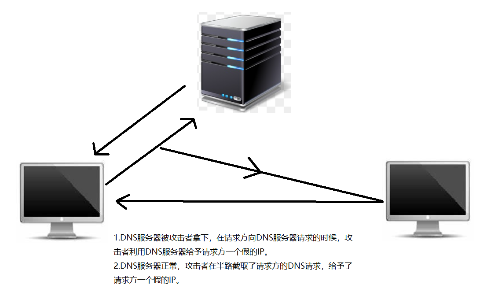

CISSP（十一）
网络构架
OSI

域名系统安全扩展
（Domain Name System Security Extensions，简称DNSSEC）是一种用于增强域名系统（DNS）安全性的扩展技术。DNSSEC旨在解决DNS中的安全漏洞，提供数据完整性和验证机制，防止DNS劫持、欺骗和缓存污染等攻击，确保域名解析的准确性和安全性。
传统的DNS协议是不安全的，存在一些潜在的攻击风险，例如：
- DNS劫持： 攻击者可以在域名解析过程中拦截请求并返回虚假的IP地址，将用户导向恶意网站。
 - DNS缓存污染： 攻击者可以伪造DNS响应，将虚假的域名映射到错误的IP地址，导致合法网站无法访问或用户访问恶意网站。

- DNS欺骗： 攻击者可以伪造DNS响应，欺骗客户端将敏感信息发送到错误的服务器。
DNSSEC通过添加数字签名机制来解决这些安全问题。它使用公钥加密技术，对DNS数据进行签名，并将签名与DNS数据一起发布。这样，当客户端发起DNS查询时，可以验证收到的DNS数据是否是由授权的DNS服务器签名的，从而保证数据的完整性和真实性。
DNSSEC的主要组件包括：
签名（Signing）： 授权的DNS服务器会对域名数据进行数字签名，生成DNSSEC记录。
验证（Validation）： 客户端的DNS解析器会验证收到的DNSSEC记录的签名，确保数据的有效性和完整性。
密钥管理（Key Management）： DNSSEC需要使用公钥加密技术，因此需要有效的密钥管理方案来确保公钥的安全性和更新。
DNSSEC的部署需要域名所有者和DNS服务器运营者的合作，以确保整个域名层级链的安全性。尽管DNSSEC能够提供一定程度的安全保护，但它并不能解决所有与DNS相关的安全问题。因此，综合使用其他安全措施如防火墙、反欺骗技术等是维护DNS安全的重要措施。
DNS中毒
（DNS Poisoning），也称为DNS缓存污染（DNS Cache Poisoning），是一种恶意攻击技术，旨在欺骗DNS服务器，使其返回虚假的DNS解析结果，将合法的域名映射到错误的IP地址上。
攻击者利用DNS中毒的漏洞，通过向DNS服务器发送伪造的DNS响应，将虚假的域名与错误的IP地址相关联。当用户发起域名解析请求时，DNS服务器会返回被篡改的DNS解析结果，导致用户访问的是攻击者控制的恶意网站，而不是用户真正想要访问的网站。
DNS中毒攻击可能会导致以下问题：
重定向用户流量： 攻击者可以将合法的域名映射到恶意网站上，从而重定向用户的流量，引导用户进入欺骗、钓鱼或恶意网站。
篡改网页内容： 攻击者可以在伪造的恶意网站上篡改网页内容，例如显示虚假信息、欺骗用户登录等，以获取敏感信息。
破坏网络服务： 攻击者可能将合法域名映射到不可用的IP地址上，导致用户无法访问真正的服务或网站。
为了防范DNS中毒攻击，一些防御措施包括：
使用DNSSEC：DNSSEC是一种安全扩展，用于防止DNS缓存污染和欺骗攻击，提供DNS数据的真实性和完整性验证。
更新DNS服务器软件：保持DNS服务器软件和系统更新，以修复已知的安全漏洞。
使用防火墙：配置防火墙来限制对DNS服务器的访问，仅允许授权的用户进行域名解析。
监测DNS流量：监测和分析DNS服务器的流量，及时发现异常和潜在的攻击。
通过综合使用这些安全措施，可以增强DNS服务器的安全性，减少DNS中毒攻击的风险。
设备防火墙
是一种用于保护网络设备的安全措施。它是一种软件或硬件设备，部署在网络设备或主机上，用于监控和过滤网络流量，以防止未经授权的访问、恶意攻击和数据泄露等安全威胁。
设备防火墙可以应用于各种网络设备，例如路由器、交换机、服务器、个人电脑、智能手机等。它的主要功能包括：
包过滤： 设备防火墙可以根据预先设定的规则，过滤进出设备的网络数据包，阻止未经授权的访问或恶意流量。
端口和协议控制： 设备防火墙可以限制设备上开放的端口和允许的网络协议，以减少潜在的攻击面。
入侵检测和预防： 设备防火墙可以监测网络流量，识别并阻止恶意入侵行为，防止黑客入侵设备。
访问控制： 设备防火墙可以根据用户身份、IP地址或其他认证方式，对设备的访问进行控制和限制。
虚拟专用网络（VPN）支持： 设备防火墙可以提供VPN功能，确保远程访问设备时的数据传输安全。
阻止恶意网站和内容过滤： 设备防火墙可以根据黑名单或规则，阻止访问已知的恶意网站或不安全的内容。
日志记录和监控： 设备防火墙可以记录网络活动和安全事件，并提供实时监控和报警功能，帮助管理员及时发现异常情况。
设备防火墙是网络安全中重要的一环，它能够提供有效的网络保护和安全管理，帮助组织和个人防范网络攻击和数据泄露风险。在网络中使用设备防火墙时，需要根据具体的安全需求和网络拓扑，合理配置防火墙规则和策略，以确保网络的安全性和可靠性。
内部分段防火墙
内部分段防火墙（Internal Segmentation Firewall，ISFW）是一种网络安全措施，旨在保护企业网络内部不同部门或区域之间的通信。这种防火墙通常位于企业内部，用于隔离不同的网络段，以提高网络安全性和隐私保护。以下是有关内部分段防火墙的一些关键信息：
内部网络隔离：企业通常将其内部网络划分为多个不同的区域或部门，如员工网络、访客网络、服务器网络等。内部分段防火墙的主要任务是确保这些不同区域之间的通信受到控制和监控，以减少横向攻击的风险。这有助于限制攻击者在成功侵入一部分网络后扩展其攻击范围。
流量检查和过滤：ISFW会监控通过不同网络区域的流量，并对其进行检查和过滤。这可以包括检查流量中的恶意软件、不正常的行为和非授权的访问尝试。ISFW还可以执行访问控制策略，仅允许授权的通信流量通过。
细粒度访问控制：ISFW通常支持细粒度的访问控制，允许管理员定义哪些用户、设备或应用程序可以访问特定资源。这有助于确保网络中的敏感数据和资源只能由授权人员访问。
监控和报告：ISFW通常具备监控和报告功能，允许管理员跟踪网络活动并生成安全事件的报告。这有助于快速检测潜在的安全威胁，并采取适当的措施来应对威胁。
高可用性：由于ISFW通常位于企业的核心网络中，因此它们通常需要高可用性和冗余性，以确保网络流量不会因硬件故障或其他问题而中断。
虚拟化支持：随着虚拟化技术的广泛应用，现代的ISFW通常支持虚拟环境，以保护虚拟化的网络和资源。
总之，内部分段防火墙是一种关键的网络安全措施，用于在企业内部保护不同网络区域之间的通信。它有助于降低内部网络的攻击风险，并提供对网络流量的监控和控制，以确保网络的安全性和隐私。在构建综合的网络安全战略中，ISFW通常与其他安全措施（如边界防火墙、入侵检测系统等）一起使用，以提供全面的保护。
ARP中毒
（ARP Poisoning，也称为ARP Spoofing或ARP缓存投毒）是一种网络安全攻击技术，攻击者通过伪造ARP（Address Resolution Protocol）响应，欺骗目标设备，使其将网络流量发送到错误的目的地。
ARP是一种用于将IP地址转换为MAC地址（物理地址）的协议。当设备在局域网中通信时，需要知道目标设备的MAC地址，以便将数据包传递到正确的设备。ARP中毒攻击利用了ARP协议的工作原理，攻击者发送虚假的ARP响应给目标设备，告诉目标设备某个IP地址对应的MAC地址是攻击者控制的设备的MAC地址。
在ARP中毒攻击中，攻击者可以实现以下目的：
数据截取： 攻击者欺骗目标设备将数据包发送到攻击者的设备，从而能够截取目标设备和其他设备之间的通信数据。
中间人攻击： 攻击者将自己伪装成网络中间人，截取目标设备与其他设备之间的通信，同时伪装成其他设备与目标设备通信。
拒绝服务（DoS）攻击： 攻击者可以使目标设备的ARP缓存失效，导致目标设备无法正常通信，从而实现拒绝服务攻击。
ARP中毒攻击是一种常见的局域网攻击，尤其在没有充分安全措施保护的公共Wi-Fi网络中容易受到攻击。为了防范ARP中毒攻击，可以采取以下措施：
使用ARP防御工具： 使用网络安全工具，如ARP防御软件，能够监测和阻止ARP中毒攻击。
启用端口安全功能： 一些交换机和路由器支持端口安全功能，可以限制每个端口允许的MAC地址数量，防止ARP欺骗攻击。
静态ARP绑定： 在网络中配置静态ARP绑定，将特定IP地址与相应的MAC地址绑定，防止ARP缓存被伪造。
使用加密： 使用加密通信协议，如SSL或VPN，可以加强通信的安全性，防止中间人攻击。
网络监控和日志： 定期监控网络流量和日志，及时发现异常和潜在的攻击。
通过采取这些安全措施，可以有效地减少ARP中毒攻击的风险，并提高网络的安全性。
MAC泛洪攻击
（MAC Flooding Attack）是一种网络安全攻击，旨在使网络交换机（Switch）的MAC地址表溢出，导致交换机进入混杂模式（Promiscuous Mode）或转换为类似集线器的工作模式，从而使攻击者能够截获网络中的数据流量。
在以太网中，交换机使用MAC地址表来维护网络设备的MAC地址和相应的接口之间的映射关系。当设备之间进行通信时，交换机会根据目标设备的MAC地址来决定将数据包转发到哪个接口。MAC泛洪攻击通过发送大量伪造的MAC地址和随机源MAC地址的数据帧来混淆交换机的MAC地址表，使其不断添加新的条目，最终导致MAC地址表溢出。
攻击者通过MAC泛洪攻击可以实现以下目的：
中间人攻击： 攻击者可以截获网络中的数据流量，进行中间人攻击，拦截和篡改数据。
拒绝服务（DoS）攻击： 如果交换机的MAC地址表被完全占满，交换机将无法正常处理和转发数据包，导致网络中的设备无法进行通信，从而实现拒绝服务攻击。
网络嗅探： 攻击者可以截获网络中的数据包，获取敏感信息，如用户名、密码等。
为了防范MAC泛洪攻击，可以采取以下措施：
使用802.1X认证： 通过使用802.1X认证，可以限制连接到网络的设备，确保只有授权的设备能够访问网络。
端口安全功能： 一些交换机支持端口安全功能，可以限制每个端口允许的MAC地址数量，防止MAC地址表溢出。
监控网络流量： 定期监控网络流量，及时发现异常和大量随机的MAC地址流量。
网络分割： 将网络划分为不同的虚拟局域网（VLAN），将不同的设备隔离在不同的VLAN中，减少攻击影响范围。
固件升级： 更新交换机的固件和软件，确保交换机具有最新的安全补丁和防护功能。
通过采取这些安全措施，可以有效地减少MAC泛洪攻击的风险，并提高网络的安全性。
流氓塔
流氓塔（Rogue Tower）是指在移动通信网络中非法、未经授权或欺诈性的基站，也称为假基站（Fake Base Station）。这些基站通常是由黑客或恶意分子部署的，用于执行各种网络攻击或窃取用户信息的活动。
流氓塔的运作方式通常是通过模拟合法的移动网络基站来吸引附近移动设备连接到它。一旦移动设备连接到了流氓塔，攻击者就能够执行各种恶意操作，例如：
窃取用户信息： 流氓塔可以截获用户的通信数据，包括短信、电话通话和数据传输，从而窃取用户的个人信息。
中间人攻击： 攻击者可以作为中间人，截取和篡改移动设备和网络之间的通信，从而进行中间人攻击。
位置跟踪： 攻击者可以利用连接到流氓塔的设备的位置信息，跟踪用户的位置。
拒绝服务（DoS）攻击： 攻击者可以通过流氓塔向移动设备发送虚假的拒绝服务请求，导致设备无法正常连接到合法的基站。
钓鱼攻击： 攻击者可以通过流氓塔欺骗用户，诱导其进入恶意网站或输入敏感信息。
防范流氓塔攻击的措施包括：
使用加密通信： 使用加密通信协议，如SSL/TLS，可以加密移动设备和网络之间的通信，减少信息被窃取的风险。
定期检测： 运营商和网络管理员可以定期检测网络中是否存在流氓塔，并采取相应的应对措施。
使用专业设备： 使用来自可信供应商的手机和网络设备，以减少流氓塔攻击的风险。
网络监控： 实时监控网络流量，及时发现异常和潜在的攻击。
由于流氓塔可能会导致用户隐私泄露和网络安全问题，因此对于网络运营商、企业和个人用户来说，防范和检测流氓塔攻击至关重要。
巡回维修技师
巡回维修技师是指在某个地区或区域内移动，定期或不定期地检修、维护和修复设备或设施的专业技术人员。巡回维修技师通常是由公司、组织或服务提供商派遣到客户现场，负责维护和保养客户设备，确保其正常运行和高效工作。
巡回维修技师的工作范围和领域可能涵盖各种设备和设施，例如：
IT设备维修： 巡回维修技师可能负责修复计算机、服务器、打印机、网络设备等IT设备的故障。
家用电器维修： 巡回维修技师可以处理家用电器（如冰箱、洗衣机、空调等）的维修和故障排除。
工业设备维修： 在工业领域，巡回维修技师可能负责维护和修复生产线上的机械设备、自动化系统等。
电子设备维修： 巡回维修技师可能负责修复电子设备，如手机、平板电脑、电视等。
通讯设备维修： 在通讯领域，巡回维修技师可能负责维护和修复移动通信设备、网络设备等。
巡回维修技师需要具备相应的专业技术知识和技能，以诊断和解决设备故障，并进行维护工作。他们通常需要在短时间内快速响应客户的服务请求，确保设备尽快恢复正常运行。在工作过程中，巡回维修技师还可能与客户进行沟通，提供维修建议和技术支持。
巡回维修技师的工作具有一定的挑战性，需要他们具备较强的技术水平、解决问题的能力和良好的沟通技巧，以确保客户满意并维持设备的稳定运行。
CCMP
CCMP是Wi-Fi网络中的一种安全加密协议，全称为Counter Mode with Cipher Block Chaining Message Authentication Code Protocol。它是用于保护无线局域网（WLAN）中数据传输安全的一种加密标准，常用于802.11i（WPA2）安全协议中。
CCMP是WPA2（Wi-Fi Protected Access 2）的数据加密和完整性校验方法之一，它取代了WPA（Wi-Fi Protected Access）中使用的TKIP（Temporal Key Integrity Protocol）加密算法。CCMP使用AES（Advanced Encryption Standard）算法进行数据加密，并使用CBC-MAC（Cipher Block Chaining Message Authentication Code）进行数据完整性校验，提供了更强大的数据保护和安全性。
CCMP的特点包括：
安全性： CCMP使用AES算法，AES是一种对称加密算法，被广泛认为是安全性最高的加密算法之一，能够提供强大的数据保护。
数据完整性： CCMP使用CBC-MAC算法对数据进行完整性校验，确保数据在传输过程中没有被篡改或损坏。
快速性： CCMP采用计数器模式（Counter Mode），支持并行加密和解密操作，提高了数据传输的速度。
适用性广泛： CCMP可以适用于不同类型的Wi-Fi网络，包括家庭网络、企业网络和公共无线热点等。
由于CCMP提供了更高级别的安全性和性能，它已成为目前Wi-Fi网络中主流的加密方式，取代了WPA中使用的TKIP。使用CCMP加密可以有效地保护无线网络中的数据传输，防止数据被未经授权的用户截获或篡改。
缩写
EDR：EDR是“Endpoint Detection and Response”的缩写，指的是终端检测与响应。它是一种网络安全技术，用于检测和应对网络终端设备（如计算机、服务器、移动设备等）上的安全威胁。EDR技术可以实时监测终端设备上的活动，并通过分析行为和事件来检测潜在的恶意活动或安全漏洞。一旦发现威胁，EDR可以迅速响应并采取措施来阻止攻击或限制其影响。
NGFW：NGFW是“Next-Generation Firewall”的缩写，即下一代防火墙。NGFW是传统防火墙的进化版本，它不仅具备传统防火墙的功能，如包过滤和访问控制，还增加了一些高级功能，如应用程序识别和控制、入侵防御系统（IDS）、虚拟专用网络（VPN）等。NGFW能够更加智能地识别和处理网络流量，提供更全面的安全保护。
WAF：WAF是“Web Application Firewall”的缩写，指的是Web应用程序防火墙。WAF是一种用于保护Web应用程序的安全措施，它位于Web应用程序与客户端之间，监控和过滤HTTP请求和响应，以检测和阻止恶意的Web请求。WAF可以防止诸如SQL注入、跨站点脚本（XSS）、跨站点请求伪造（CSRF）等Web攻击。
XSRF：XSRF是“Cross-Site Request Forgery”的缩写，即跨站点请求伪造。XSRF是一种Web安全漏洞，攻击者通过伪装合法用户的请求，诱使用户在已登录的情况下执行不经意的操作，从而进行未授权的操作。XSRF攻击通常利用用户对网站的信任，对于未经防范的Web应用程序可能造成安全威胁。防范XSRF攻击的一种方法是使用合适的令牌（CSRF Token）来验证请求的合法性。
PAP、CHAP、EAP和RADIUS都是与网络认证和安全相关的协议或框架，用于在计算机网络中进行用户身份验证。它们的含义分别如下：
PAP（Password Authentication Protocol）： 密码认证协议。PAP是一种最简单的认证协议，它在认证过程中只使用明文密码进行传输，安全性较低。客户端在连接时将用户名和密码明文发送给服务器，服务器进行简单的对比验证。因为密码是明文传输，PAP并不是一种安全的认证方法，通常只在安全性要求不高的情况下使用。
CHAP（Challenge Handshake Authentication Protocol）： 挑战-握手认证协议。CHAP是一种更安全的认证协议，它通过使用哈希函数和挑战-响应机制来进行认证。在CHAP中，服务器会向客户端发送一个随机数挑战，客户端使用密码和挑战的组合计算哈希值，并将结果发送给服务器。服务器通过自己保存的密码和挑战值计算哈希值，并与客户端发送的结果进行对比验证。
EAP（Extensible Authentication Protocol）： 可扩展认证协议。EAP是一种框架协议，它定义了一组通用的认证方法，允许在其框架下实现不同的认证方式，如EAP-TLS、EAP-PEAP、EAP-TTLS等。EAP提供了更灵活和安全的认证选项，广泛用于无线网络、VPN和其他需要用户身份验证的场景。
RADIUS（Remote Authentication Dial-In User Service）： 远程认证拨号用户服务。RADIUS是一种客户端/服务器协议，用于提供中央认证、授权和账号管理服务。它允许网络设备（如无线访问点、VPN服务器等）通过网络访问服务器进行用户认证，并根据认证结果控制用户对网络资源的访问权限。RADIUS通常与EAP一起使用，用于对用户进行认证并授权访问网络资源。
Zigbee
Zigbee是一种低功耗、低数据传输率的无线通信技术，用于构建短距离、低复杂性的无线网络。它是一种开放标准的无线通信协议，旨在支持物联网（IoT）设备之间的无线连接和通信。
Zigbee协议基于IEEE 802.15.4无线标准，并针对低功耗、低数据传输率、低复杂性的应用场景进行了优化。它适用于各种低功耗、低数据速率的设备，如传感器、智能家居设备、无线控制器、监控系统等。
Zigbee的特点和优势包括：
低功耗： Zigbee设备通常采用低功耗设计，因此在电池供电的情况下可以长时间运行。
低数据传输率： Zigbee主要用于传输小量的数据，适合需要低数据传输速率的应用。
自组织网络： Zigbee设备可以自动组建成网状网络，形成一个自组织、自修复的无线网络结构。
安全性： Zigbee提供了安全加密和认证机制，确保通信的安全性和保密性。
多频段支持： Zigbee在2.4GHz、900MHz和868MHz等多个频段上运行，能够适应不同的国家和地区的无线规范。
成本低廉： Zigbee设备通常成本较低，适合大规模部署。
由于Zigbee具有低功耗、低数据速率和自组织网络等特点，它在物联网应用中得到广泛应用，特别是在智能家居、智能建筑、工业自动化和智能健康监测等领域。
EAP
EAP，即Extensible Authentication Protocol，是一种用于网络认证的框架协议。它提供了一种灵活的、可扩展的方式来进行用户身份验证和认证。EAP并不是一种具体的认证方法，而是定义了一组协议规范，允许在其框架下实现不同的认证方法。
EAP的工作原理如下：
发起认证请求： EAP认证是由网络服务器（如无线访问点或认证服务器）发起的。当用户设备（如笔记本电脑、智能手机等）尝试连接到网络时，网络服务器会发送EAP认证请求。
选择认证方法： 用户设备收到EAP认证请求后，会根据服务器发送的EAP类型信息选择合适的认证方法。
认证过程： 用户设备和服务器之间开始进行认证过程。实际的认证过程由所选择的EAP方法来定义，这可以是密码验证、数字证书认证、双因素认证等。
认证结果： 认证过程完成后，服务器会对认证结果进行验证。如果认证成功，用户设备将被授予访问网络的权限。
EAP方法的例子包括：
EAP-TLS（Transport Layer Security）： 基于数字证书的认证方法，使用TLS协议来加密通信，提供高度安全的认证。
EAP-PEAP（Protected Extensible Authentication Protocol）： 基于TLS隧道的认证方法，通过在TLS隧道中传递用户名和密码来实现认证。
EAP-TTLS（Tunneled Transport Layer Security）： 基于TLS隧道的认证方法，类似于EAP-PEAP，但允许在隧道中使用不同的认证方法。
EAP-MSCHAPv2（Microsoft Challenge Handshake Authentication Protocol version 2）： Microsoft开发的一种基于密码的认证方法，广泛用于Wi-Fi网络。
由于EAP提供了灵活的认证框架，允许在不同的网络环境中使用多种认证方法，因此它被广泛用于无线网络、虚拟专用网络（VPN）和其他需要用户身份验证的场景。
FCoE
光纤通道以太网（Fibre Channel over Ethernet，FCoE）是一种存储和网络技术，旨在通过以太网网络传输存储数据。它的主要目标是将传统的光纤通道（Fibre Channel）存储网络与以太网数据网络合并，从而简化数据中心网络架构，降低成本，提高效率，并提供更灵活的部署选项。
以下是有关FCoE技术的一些关键信息：
以太网传输媒介：FCoE使用以太网作为传输媒介，这是广泛使用的网络技术，它支持高速数据传输。通过利用以太网，数据中心可以减少不同类型网络（光纤通道和以太网）的复杂性，并利用以太网的广泛可用性和成本效益。
兼容性：FCoE设计旨在与现有的以太网设备和协议兼容，这意味着您可以将FCoE集成到现有的网络架构中，而无需进行大规模的设备更换。这种兼容性使得升级和迁移变得更加容易。
数据中心整合：FCoE使数据中心可以将存储流量和常规数据流量通过同一网络基础架构传输。这种整合简化了网络拓扑，并减少了数据中心设备的数量和复杂性，从而降低了维护和管理成本。
性能和可靠性：FCoE提供了与传统光纤通道相媲美的性能和可靠性水平。它支持高带宽、低延迟传输，并提供了必要的QoS（Quality of Service）支持，以确保关键存储流量的优先处理。
虚拟化支持：FCoE对虚拟化环境非常友好。它能够轻松适应虚拟服务器和存储资源的动态配置和迁移，以满足不断变化的工作负载需求。
安全性：FCoE提供了强大的安全性功能，包括数据加密、身份验证和访问控制，以确保存储数据的保密性和完整性。
总之，FCoE是一种将存储和网络传输合并到单一以太网基础架构中的技术，旨在提高数据中心的灵活性、降低成本，并提供高性能和可靠性。这使得它成为现代数据中心架构中的重要组成部分，特别是在需要处理大量存储数据的环境中。
以太网（Ethernet）
以太网（Ethernet）是一种计算机网络技术和通信协议，用于在局域网（Local Area Network，LAN）和广域网（Wide Area Network，WAN）中传输数据。以太网最初由美国计算机科学家鲍勃·梅兹（Bob Metcalfe）和戴维·博戈尔（David Boggs）于20世纪70年代初开发，是最常用的局域网技术之一。
以下是以太网的一些关键特点和特性：
拓扑结构：以太网通常使用总线型或星型拓扑结构，其中多台计算机或网络设备通过以太网交换机或集线器连接到一个共享的局域网。
数据传输：以太网使用帧（Frames）作为数据的基本传输单元。数据被分成帧并以二进制形式传输，每个帧包含了目标设备的地址信息、数据本身以及一些控制信息。
数据速率：以太网支持多种数据速率，最常见的是以太网标准中的10/100/1000 Mbps（兆比特每秒）和更高速的10 Gbps、40 Gbps、100 Gbps等。不同速率的以太网通常用于不同规模和性能需求的网络。
协议标准：以太网的工作原理和标准由IEEE（Institute of Electrical and Electronics Engineers）组织制定，最著名的以太网标准包括IEEE 802.3系列，例如IEEE 802.3 Ethernet和IEEE 802.3x流控制标准。
碰撞检测：早期的以太网采用了一种称为“CSMA/CD”（Carrier Sense Multiple Access with Collision Detection）的协议，用于检测和管理数据包的碰撞。然而，现代以太网通常使用全双工通信，不再需要碰撞检测。
应用领域：以太网广泛应用于办公室、数据中心、家庭网络和互联网基础设施中。它支持多种协议和应用程序，包括互联网访问、文件共享、视频流媒体、VoIP（Voice over IP）电话和远程桌面等。
可扩展性：以太网技术具有良好的可扩展性，允许网络管理员根据需求添加更多的设备和增加网络带宽。
总之，以太网是一种广泛使用的计算机网络技术，它为不同设备提供了可靠的数据通信方式，是现代计算机网络的基础之一。它的标准化和不断发展使其适用于各种不同规模和用途的网络。
练习题测试结果
正确率 8/20
CISSP官方学习手册（第9版）第11章练习题
- A
- D
- A,B,D
- A, B, E
- B
- C
- B,C,E
内部分段防火墙ISFW - A
ZIGBEE 低功耗，低吞吐率，需要接近式设备。
蓝牙是明文的
以太网光纤通道FCOE 是一种基于高速光纤的存储技术。 - A,B （A,B,D）
- B
- B 正确答案D
- D
- D
- B
- B
- B
- B,E,F
- A
- A
- A,D 正确答案A,C,D
17 / 20
page 500 / 892